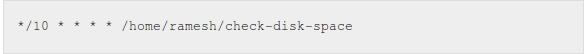

Blog
CRON JOBS in LINUX
Most of the Linux users are aware of how commands are run, processes are manipulated and scripts are executed in terminal. But, if you are a Linux system administrator, you might want them to start and execute automatically in the background. As an example, you might consider running a backup job every day, at a specific time, automatically. Or you might consider an example of collecting inventory data of the systems deployed across your network, by running a script automatically on monthly basis. But, how to schedule these jobs and execute them automatically in Linux?
There is an utility in Linux known as CRON with which you can start your jobs automatically at a desired time and schedule them to get executed periodically.
Cron utility consists of two parts: The cron daemon and the cron configuration files. Cron daemon is just like any service that is started automatically whenever your system boots. Cron configuration files hold the information of what to do and when to do. The main job of cron daemon is to inspect the configuration regularly (every minute to be more precise) and check if there is any job to be completed.
What is cron ??
It is an acronym for "Command Run On Notice" or for "Commands Run Over Night"
The software utility Cron is a time-based job scheduler in Unix-like computer operating systems. People who set up and maintain software environments use cron to schedule jobs (commands or shell scripts) to run periodically at fixed times, dates, or intervals. It typically automates system maintenance or administration—though its general-purpose nature makes it useful for things like connecting to the Internet and downloading email at regular intervals.
"cron" is most suitable for scheduling repetitive tasks. Scheduling one-time tasks is often more easily accomplished using the associated at utility.
Cron assumes that the system is on continuously. If the system is not on when a task is scheduled, it is not executed.
System Cron Directories
In the /etc directory, you will find some sub-directories namely cron.hourly, cron.daily, cron.weekly and cron.monthly. You can put your scripts in these directories, and as their names suggest, they will be automatically executed after certain period of time. For example, if you wish to run a job or service regularly after every week, simple put the script in /etc/cron.weekly directory.
In case you need to execute a script after every fortnight, keeping the script in any of the above mentioned directories will not help. But, every problem has a solution. You can launch Crontab (CRON TABle) editor which provides an interface that is very much similar to vi editor.
Controlling Access to Cron
The /etc/cron.allow and /etc/cron.deny files are used to restrict access to cron. The format of both access control files is one username on each line. Whitespace is not permitted in either file. The cron daemon (crond) does not have to be restarted if the access control files are modified. The access control files are read each time a user tries to add or delete a cron task.
The root user can always use cron, regardless of the usernames listed in the access control files.
If the file cron.allow exists, only users listed in it are allowed to use cron, and the cron.deny file is ignored.
If cron.allow does not exist, users listed in cron.deny are not allowed to use cron.
Crontab File...
Cron is driven by a crontab (cron table) file,A crontab is a simple text file with a list of commands meant to be run at specified times. It is edited with a command-line utility. These commands (and their run times) are then controlled by the cron daemon, which executes them in the system background. A configuration file that specifies shell commands to run periodically on a given schedule.
The crontab files are stored where the lists of jobs and other instructions to the cron daemon are kept. Users can have their own individual crontab files and often there is a system wide crontab file (usually in /etc or a subdirectory of /etc) that only system administrators can edit.
Each line of a crontab file represents a job, and is composed of a CRON expression, followed by a shell command to execute.Normally the job is executed when the time/date specification fields all match the current time and date.
Cron Expression
A CRON expression is a string comprising five or six fields separated by white space that represents a set of times, normally as a schedule to execute some routine.
Format
In some uses of the CRON format there is also a seconds field at the beginning of the pattern. In that case, the CRON expression is a string comprising 6 or 7 fields.
Comma ( , ) Commas are used to separate items of a list. For example, using "MON,WED,FRI" in the 5th field (day of week) means Mondays, Wednesdays and Fridays.
Hyphen ( - ) Hyphens define ranges. For example, 2000-2010 indicates every year between 2000 and 2010 AD, inclusive.
Percent ( % ) Percent-signs (%) in the command, unless escaped with backslash (\), are changed into newline characters, and all data after the first % are sent to the command as standard input.
Using Cron
1. Scheduling a Job For a Specific Time
The basic usage of cron is to execute a job in a specific time as shown below.
This will execute the Full backup shell script (full-backup) on 10th June 08:30 AM.Please note that the time field uses 24 hours format.
2. Schedule a Job For More Than One Instance (e.g. Twice a Day)
The following script take a incremental backup twice a day every day.
This example executes the specified incremental backup shell script (incremental-backup) at 11:00 and 16:00 on every day. The comma separated value in a field specifies that the command needs to be executed in all the mentioned time.
3. Schedule a Job for Specific Range of Time (e.g. Only on Weekdays)
If you wanted a job to be scheduled for every hour with in a specific range of time then use the following.Eg- Cron Job everyday during working hours.
This example checks the status of the database everyday (including weekends) during the working hours 9 a.m – 6 p.m

4. Schedule a Job for Every Minute Using Cron.
The * means all the possible unit — i.e every minute of every hour through out the year.
More than using this * directly, you will find it very useful in the following cases.
- When you specify */5 in minute field means every 5 minutes.
- When you specify 0-10/2 in minute field mean every 2 minutes in the first 10 minute.
- Thus the above convention can be used for all the other 4 fields.
5. Schedule a Background Cron Job For Every 10 Minutes.
Use the following, if you want to check the disk space every 10 minutes.
Special Strings
Instead of specifying values in the 5 fields, we can specify it using a single keyword as mentioned below. There are special cases in which instead of the above 5 fields you can use @ followed by a keyword — such as reboot, midnight, yearly, hourly.
Cron also offers some special strings:

CronTab Commands
Crontab command manages the cron table that is used by the cron daemon to execute the cron jobs.
1. Edit Cron Table using Option -e
-e stands for edit. This allows you to edit the crontab of the current user. If we logged in as root, this will automatically open root’s cron jobs in a Vim editor, and allow us to edit it.
When you save your edits and come out of the Vim editor, it will display oone of the following messages, depending on whether you made any changes or not.
2. Display Cron Table using Option -l
-l stands for list. This displays the crontab of the current user. If we logged in as root, this will display the cron jobs of root user.
3. Tweaking Other Users Crontab using Option -u
-u stands for user. This should be followed by a valid username in the system. -u option alone doesn’t do anything. It should be combined with other options.
If you don’t specify -u username, crontab commands wil be executed on the current user.If you specify -u username, the crontab command will be executed on the given username. For example, to display the cron jobs of oracle user, combine -l with -u option.
4. Load Crontab from a File
Instead of manually editing the crontab to add new jobs, you can also upload all the cron jobs from a file. This is helpful when you have to maintain lot of servers that has the same cron job entries.
In the following example, all the cron jobs are in the /home/root/mycronjobs.txt file.
To upload the mycronjobs.txt jobs to current user crontab, do the following:
Validate to make sure the cron jobs are successfully uploaded.
Note: Be careful while using this upload method, as this will wipe-out all the current cron job entries before uploading the new ones.
5. Delete All Cron Jobs using Option -r
-r stands for remove. This will remove all the cron job entries of the current user as shown below.
-i stands for interactive mode. Combining -i with -r will ask you a confirmation before removing all the crontab entries.
6. How to Disable/Redirect the Crontab Mail Output using MAIL keyword?
By default crontab sends the job output to the user who scheduled the job. If you want to redirect the output to a specific user, add or update the MAIL variable in the crontab as shown below.
7. Specify PATH Variable in the Crontab
All the above examples we specified absolute path of the Linux command or the shell-script that needs to be executed.
For example, instead of specifying /home/ramesh/tape-backup, if you want to just specify tape-backup, then add the path /home/ramesh to the PATH variable in the crontab as shown below.

Anacron Vs Cron
Anacron is the cron for desktops and laptops. Anacron does not expect the system to be running 24 x 7 like a server.
When you want a background job to be executed automatically on a machine that is not running 24 x 7, you should use anacron.
For example, if you have a backup script scheduled everyday at 11 PM as a regular cron job, and if your laptop is not up at 11 PM, your backup job will not be executed. However, if you have the same job scheduled in anacron, you can be sure that it will be executed once the laptop come back up.
Jobs can be scheduled to be executed only in days.
Anacrontab Format
Just like how cron has /etc/crontab, anacron has /etc/anacrontab. /etc/anacrontab file has the anacron jobs mentioned in the following format.
Field 1 is Recurrence period: This is a numeric value that specifies the number of days.
1 – daily7 – weekly
30 – monthly
N – This can be any numeric value. N indicates number of days
Note: You can also use ‘@monthly’ for a job that needs to be executed monthly.
Field 2 is Delay: This indicates the delay in minutes. i.e X number of minutes anacron should wait before executing the job after the the machine starts.
Field 3 is Job identifier: It is the name for the job’s timestamp file. It should be unique for each job. This will be available as a file under the /var/spool/anacron directory. This file will contain a single line that indicates the last time when this job was executed.Field 4 is command: Command or shell script that needs to be executed.
DAEMONS in LINUX
A Daemon is a computer program that runs as a background process, rather than being under the direct control of an interactive user.
Daemons are usually instantiated as processes. A process is an executing (i.e., running) instance of a program. Processes are managed by the kernel (i.e., the core of the operating system), which assigns each a unique process identification number (PID).
There are three basic types of processes in Linux: interactive, batch and daemon. Interactive processes are run interactively by a user at the command line (i.e., all-text mode). Batch processes are submitted from a queue of processes and are not associated with the command line; they are well suited for performing recurring tasks when system usage is otherwise low.
Creation of Daemons
In a Unix environment, the parent process of a daemon is often, but not always, the init process. A daemon is usually either created by a process forking a child process and then immediately exiting, thus causing init to adopt the child process, or by the init process directly launching the daemon. In addition, a daemon launched by forking and exiting typically must perform other operations, such as dissociating the process from any controlling terminal (tty). Such procedures are often implemented in various convenience routines such as daemon(3) in Unix.
Systems often start daemons at boot time and serve the function of responding to network requests, hardware activity, or other programs by performing some task. Daemons can also configure hardware (like udevd on some Linux systems), run scheduled tasks (like cron), and perform a variety of other tasks.
Difference between Cronjobs and DAEMONS
A Daemon is a process which runs in the backgorund which doesn't need any user interaction. Once started it keeps on running its neccessary tasks.
A Cron Batch process.... Now these are one of the jobs scheduled by the user in the cron tab files. Each of these files are executed as per the details mentioned by the user in the cron tab files. All these jobs scheduled are run by a daemon called crond.
When & is used at the end of a command... it becomes a daemon.
In general, if your task needs to run more than a few times per hour (maybe less than 10 minutes) you probably want to run a daemon.
A daemon which is always running, has the following benefits:
1.It can run at frequencies greater than 1 per minute
2.It can remember state from its previous run more easily, which makes programming simpler (if you need to remember state) and can improve efficiency in some cases.
3.BUT if it quits (e.g. following an error), it won't automatically be restarted unless you implemented that feature
4.It uses memory even when not doing anything useful.
5.Memory leaks are more of a problem.
A cronjob is a proccess that is executed once in a while. An example of cronjob could be a script that remove the content of a temporary folder once in a while, or a program that sends push notifications every day at 9.00 am to a bunch of devices.
In general, robustness favours "cron", and performance favours a "daemon".